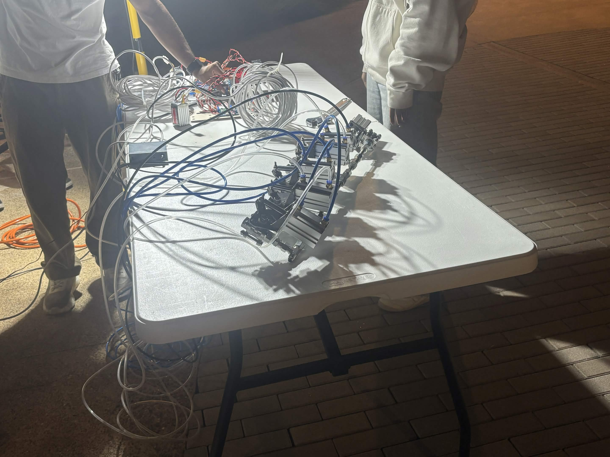
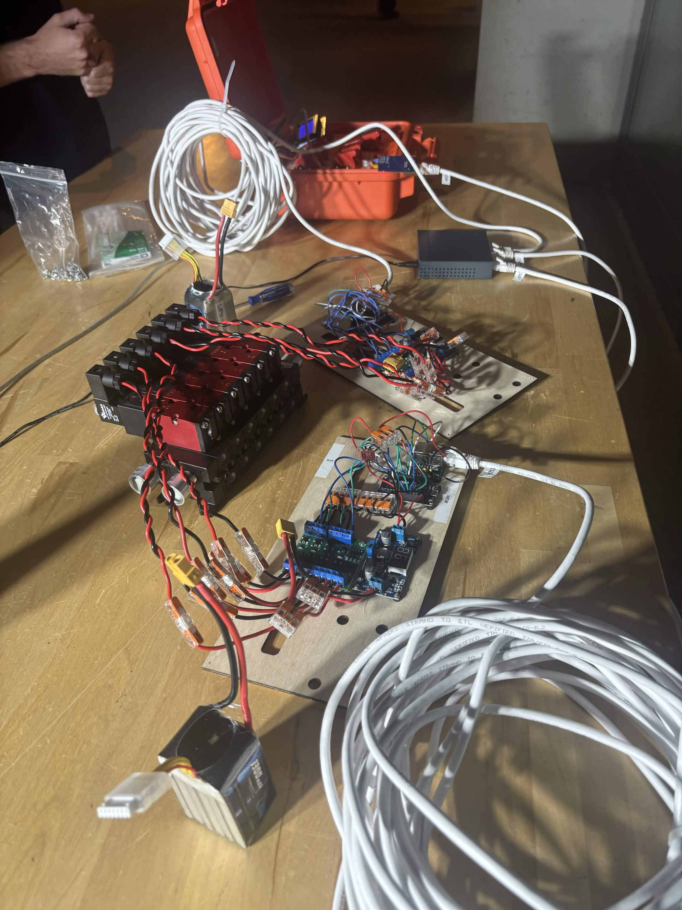
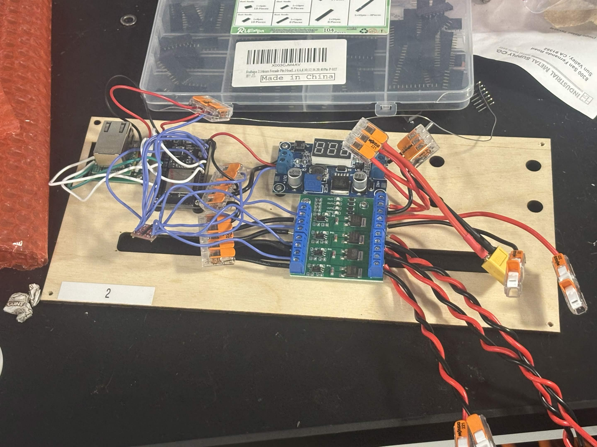
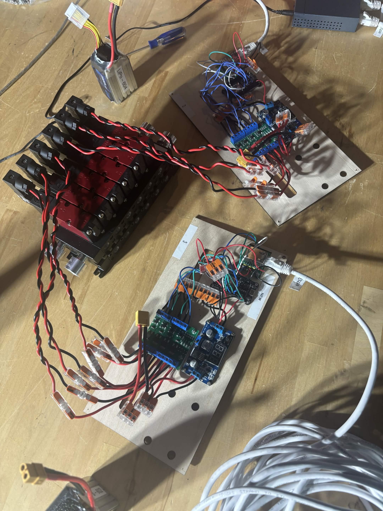

Phoenix Control Ground Station

Overview
Co-engineered a board that transmits signals from the ground station switches to actuate the solenoids and release the fluid valves.
The board contains an Ethernet connection to the ground station, an ESP32 microcontroller to read signals, a buck converter to step down voltage from the 24V LiPo battery, a level shifter to step the signals up to the 5V required by the solenoid driver, a MOSFET to signal the solenoid, and connectors wired to the solenoids.
I designed the board in CAD, laser-cut it, stripped the wires, and assisted assembling the board



